いのちを味わうリトリート
2023.4.29(sat) 14:00 - 5.1(mon) 15:30 ｜
Hokkaido Toya
scroll
「目の前のいのち」「自分自身のいのち」を味わう体験は、
あなたの中にある全てとのつながりを思い出させてくれる
生命の輪。それは、壮大な宇宙の系譜。
あなたもわたしも、その中の一つの尊いひかり。
今回の食のリトリートは、目の前のいのちと対峙し、触れ合い、
「食べること」を通して
あなたの中にある全てとのつながりを思い出す2泊3日。
宇宙と、大自然と、自分自身と、そして全ての生き物との「境界」。
それをこの場のエネルギー、
そしてリトリートの案内人のガイドによって外していきます。
あなたのうちにある「つながり」に触れ、「全てとともにある自分」を取り戻すことは、
これまでの常識が覆り、人生の根底から変わってしまうほどのインパクトがあります。
きっと、見える世界が変わってしまう。
それは、生きる世界が変わるということです。
あなたは、あなたの目・意識でみた世界を生きることしかできないのだから。
今年の春。人生が変わってしまうような旅に、参加してみませんか？
-
北海道の春の特別はやはり「山菜」
今回リトリートを開催するBlue Villageには、春になると、たくさんの天然の山菜が芽吹きます。あちらこちらに自生している山菜を自分で見つけて、料理して、食べる体験は、この地球が私たち人間に、惜しみない恵みを、愛を、ずっと与え続けてくれていたことを教えてくれます。その感覚を身体で感じたとき、あなたが得るものは、人生において一番大切なものです。
それはなんでしょうか。ぜひ体験してみてください。そして、みなさんと一緒に採集した採れたての山菜、事前に仕込んだ様々なお料理で味わって頂きます。山菜のジェノベーゼ、ふきの薬膳ピクルス、熊笹の手作り納豆、よもぎの甘酒、フレッシュ松葉のジュース等、たくさんの新しい味わいに出会えるのではないかなと思います。さらに今回は収穫したばかりの「ふき」を、保存のきく塩漬けにして、美味しい活用方法のレシピ共ににお持ち帰り頂きます。日常に戻った後も、ここで受け取った自然からのギフトを感じて、お楽しみ頂けたらと思っています。
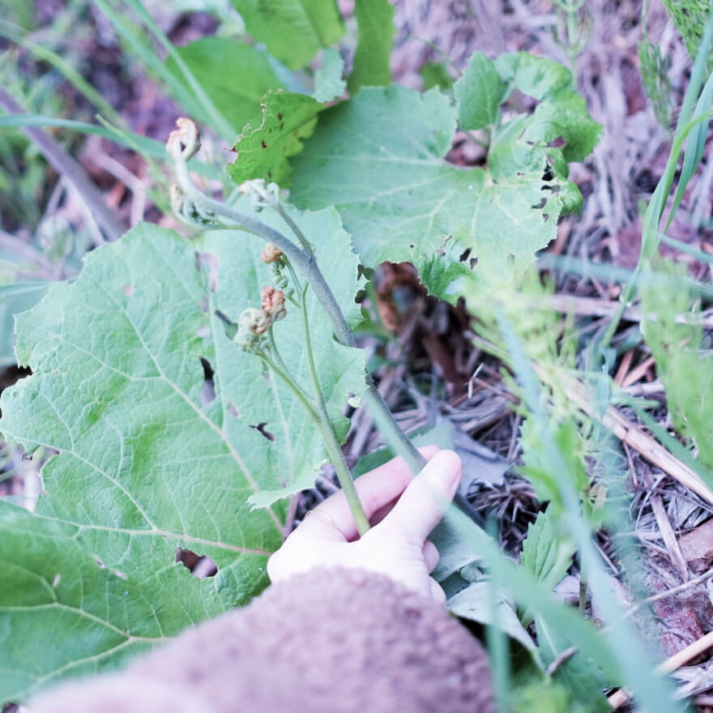 -
まったく新しい「食のアート」体験
また、昨年のリトリートでも大好評の「食のインスタレーション・春バージョン」も実施します。特別な空間で、ストーリーに合わせて運ばれてくるお料理をお召し上がり頂く、新しい食のアート体験です。毎回涙する人続出の「食のインスタレーション」は、うのかなオリジナルのここでしか味わえない体験です。
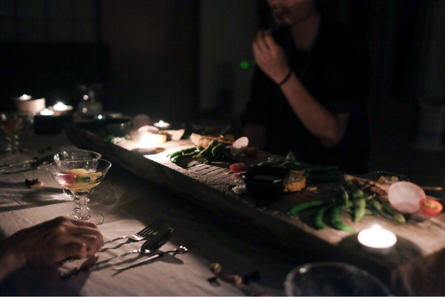 -
轟く大地の振動でチューニングされる身体
リトリート期間中は、春のBlue Villageを一番五感で感じて頂けるテントで眠りながら、長い冬を経て芽吹く草花の力強いエネルギー、春を待ちわびていた動物たちの喜びのうた、微生物たちが活発に蠢く大地の振動をダイレクトに味わって頂き、自然と身体がチューニングすることで、ひらいていく感覚でこそ、起こり、そして体験できることが全てです。ぜひ、楽しみにしていてください！
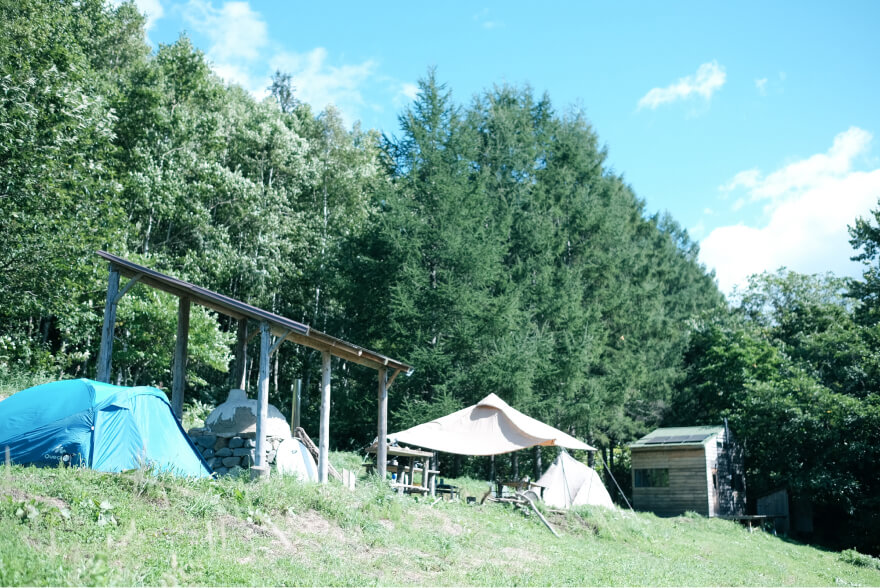
時間の流れ
-
1日目【自然からの歓迎】
14:08洞爺駅集合
14:30ビレッジ到着・テントにご案内
15:00フィールドツアー・湧水で場とつながる
17:00焚き火&土地を味わうWelcome ディナー
19:30温泉
21:30就寝 -
2日目【いのちの味わい】
8:00朝の時間・神なる食事
9:00チェックイン
10:00山菜摘み・アウトドア山菜料理
12:00昼食
13:30山菜保存食づくり
15:00温泉
17:30食のインスタレーション
20:00チェックアウト・私の中にあるもの -
3日目【宇宙のエネルギーにアクセスする】
8:00朝の時間・神なる食事
9:00チェックイン・陰陽と宇宙のお話し
11:00宇宙おむすびをつくる
13:00エネルギータンク洞爺湖でランチ
14:00チェックアウト
15:30洞爺駅にて解散
時間と共に深まる体験
-
芽吹き・山菜
硬い土を突き破って芽吹く力強い山菜のエネルギーを感じる
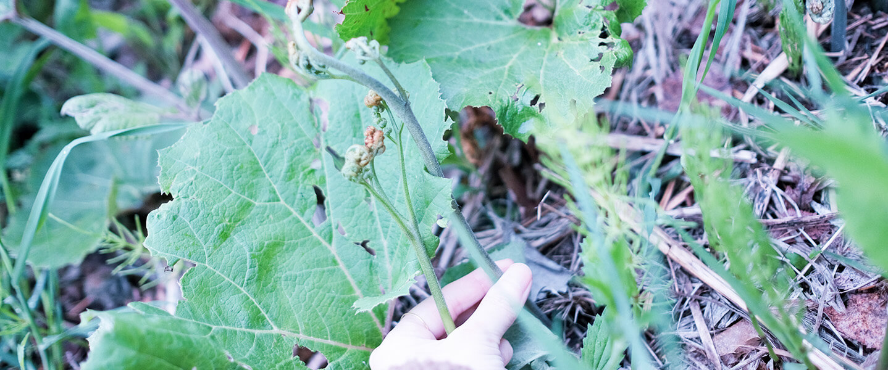 -
いのちの輪・食のインスタレーション
めぐりめぐるいのちの輪を感じる
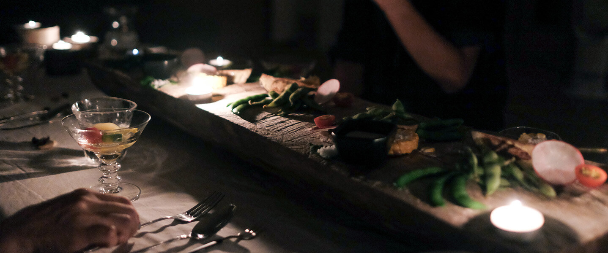 -
振動・微生物の蠢き
眠りながら、身体に感じる土中のいのちの振動を感じる
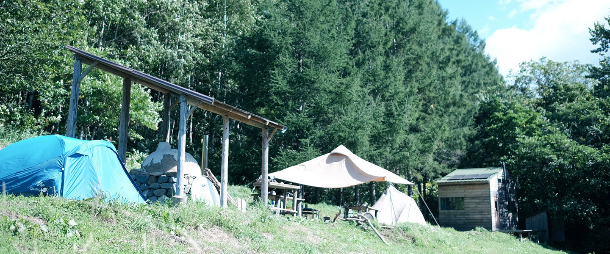
-
まだまだ魅力たっぷり
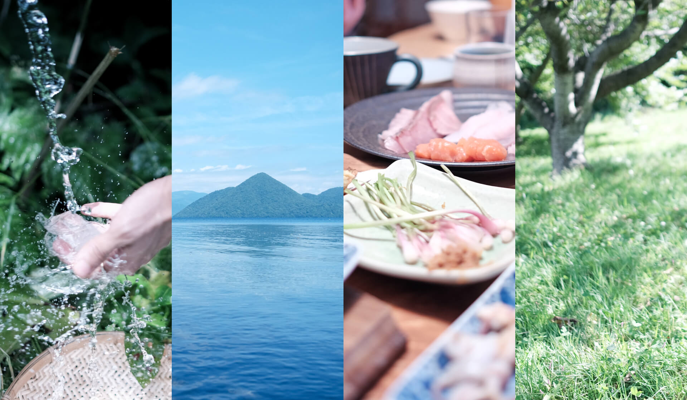敷地内に湧き出る天然水飲み放題！
人目につかない白樺の森に囲まれた秘境！
毎晩近くのサウナが最高な温泉へ！
透明度抜群、絶景の洞爺湖を楽しむ！
車で10分で海も！北海道の味覚を満喫！
新鮮な海の幸、山の幸、自然栽培のお野菜、乳製品・・！ここでしかできないスペシャルな体験に飛行機&電車or車で半日かからずに参加できる！
6年かけて大切に創り、育ててきた特別な場所を初の一般公開！ -
冬の終わりと
春の始まりを感じる気温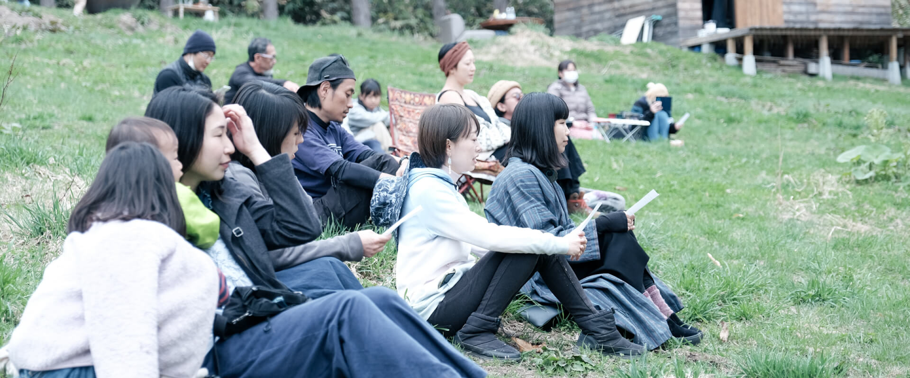最高気温は15度、最低気温は7度前後です。
日中晴れていれば暖かいですが、夕方から明け方は冷え込みますので、
冬用のインナーやアウター、温度調節のしやすい服装をご準備ください。
また朝晩は、朝露や夜露でフィールドの地面が湿っているので、
滞在中のお履物は防水スニーカーやショート雨靴をおすすめします。
リトリート詳細
- 日程
- 2023年4月29日(土) 14時 〜 5月1日(月) 15時半（2泊3日）
- 集合/解散場所
- JR洞爺駅 (新千歳空港より車で約2時間、特急電車で約1時間半) 電車でお越しの方は集合時は14:08着、解散時は15:30発をご予定ください。車での送迎をいたします。
- 参加費
- ¥88,000｜早割 ¥77,000(3/21(火)春分の日まで) 表記価格は税込です。
- お申し込み締切
- 4/16(日)
- 定員
- 10名
- 時間の流れ
- 1日目
14:08 洞爺駅集合
14:30 ビレッジ到着、テントにご案内
15:00 フィールドツアー、チェックイン
17:00 Welcome BBQ
19:30 温泉
21:30 チェックアウト、就寝 - 2日目
8:30 朝の時間
9:30 チェックイン
10:30 山菜摘み
12:00 昼食
13:30 山菜保存食づくり
15:00 温泉
17:30 食のインスタレーション
20:00 チェックアウト - 3日目
8:30 朝の時間
9:30 チェックイン
10:30 おむすび作り
12:30 湖畔ランチ
13:40 解散
- 含まれるもの
- 期間中の食事、温泉利用料金、移動費、キャンプ用品、写真・動画撮影
キャンプ用品は、テントや十分に温かい寝袋、マット、ライトなど、必要な器材の全てをこちらでご用意します。
全日程カメラマンが同行し、期間中の写真撮影、終了後の振り返り動画をご提供します。
- 持ち物
- 水筒、着替え、防寒着、雨靴、バスタオル、歯ブラシ 東京での冬に近い環境です。ダウンやフリース、ヒートテックなどを必ずご持参ください。
前泊または後泊する場合の追加料金は、1泊¥5,500(テント・寝袋、夜と朝の食事付き)です。
全編を通して、携帯電話やパソコンの利用ができません。緊急時の連絡先としてスタッフの連絡先をお伝えします。
メンバー
-
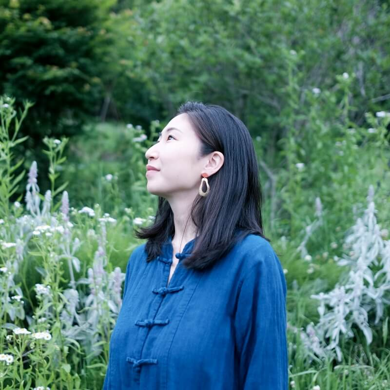
うのかなCosmic food creator
宇宙から微生物まで、「つながる」食の体験を。
東京から洞爺湖へ移住し、日々子育てと畑をしながら、Farm to Tableを楽しんでいる。そして、これまで感じていた「食べることで、過去や未来、他のいのちとつながる感覚」を、インスタレーションを通して体験する場を開いたり、YouTube【湖はんの森ぐらし。】では、BlueVillageでの暮らしや世界観を発信。主宰するオンラインサロン【湖はんの森の薬膳salon】では、薬膳をベースとした食の研究成果のレシピをオンラインレッスンで共有したり、知識を深めている。
彼女の作り出す世界観と、魔法のように生み出される豊かな食卓は、BlueVillageのメンバーはもちろん、ここを訪れる人たちを虜にし続けてる。 -
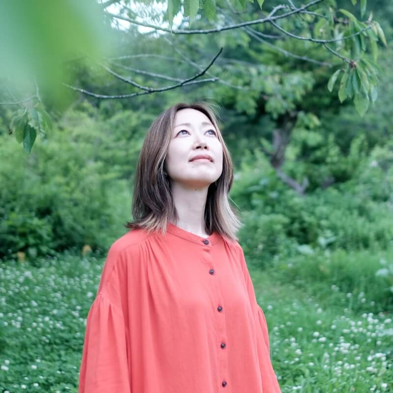
むらかみ よしみPhotographer/Designer
50年後、100年後もあってほしいと願う、想いをカタチに。
大学卒業後にアパレル販売員として働いていたが「本当にやりたい仕事とは？」という疑問を持ち、専門学校を経てクリエイターに転身。フリーランスとしてデザインを中心に、ディレクション、撮影など多方面で、様々なプロジェクトに関わる。BlueVillageではカメラを片手に、ここで起こるいろいろな事象を写真や動画として切り取り続けている。また、湧き上がるメンバーたちの想いを、ロゴやサイト、その他メディアなどのカタチにし、発信するサポートもしている。
彼女は世界の美しさを発見する目を持ち、そのまま収穫できる技術と、一度強く信じたらまっすぐ突き進む強さがある。たくさんの人の伴走者として、独特なクリエイターとして、今日も力強く走り続けている。 -
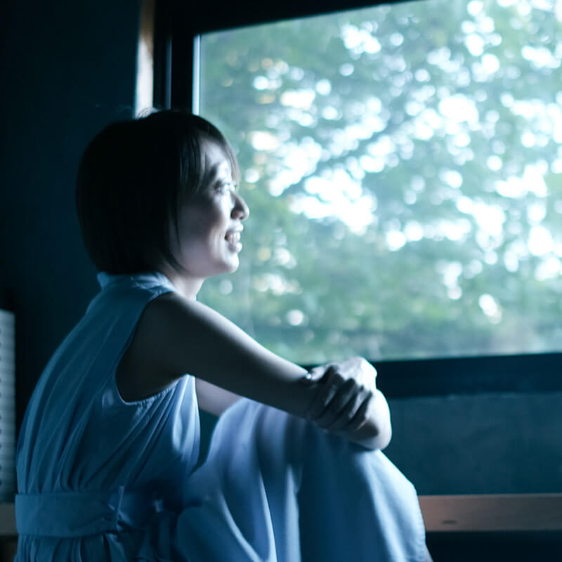
おおた さやこTwinkle recipient
関わる人・もの・ことの光を見つめる
札幌生まれ。美大卒業後、東京でアクセサリーやインテリアデザイン、ブランディングの仕事に携わる。2017年に札幌に帰郷し、企業にてバイヤーやプランナーとして働く中、自分の内側と繋がる生き方をしたいと感じるようになる。子育てが落ち着き始めた昨年より洞爺湖と札幌の二拠点生活を始め、BlueVillageの仲間と出会い、ジョイン。つくること、遊ぶこと、祈り、宇宙や水、光と色に惹かれ、日々魅了されている。人や、様々なものの内外にある光を見つめ、受け取ることが得意。
彼女と話すことで、人は、世界はとても素直で喜びに溢れていることに気づくことができる。